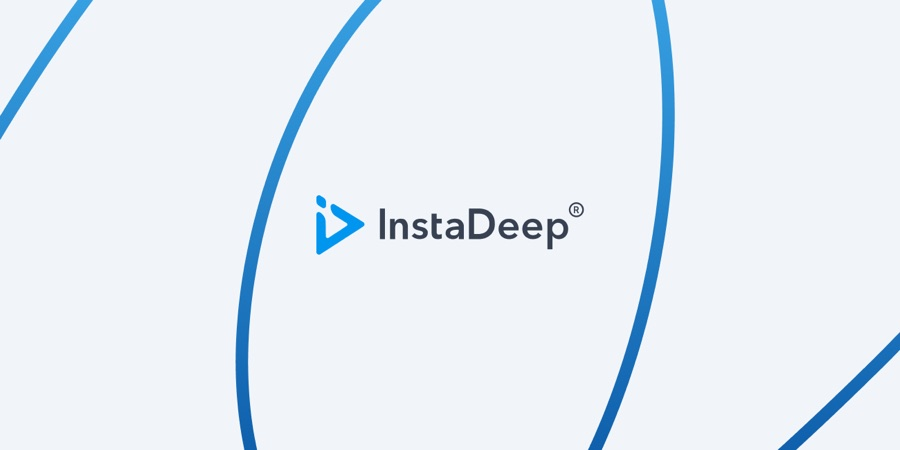
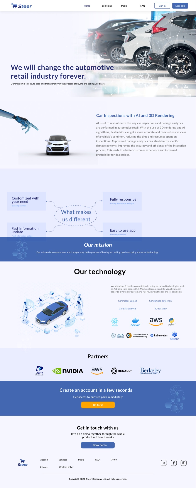
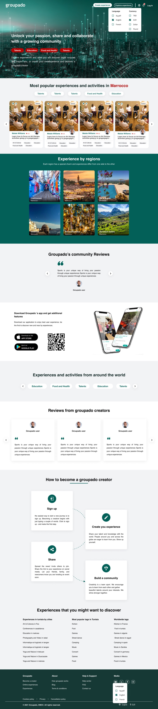
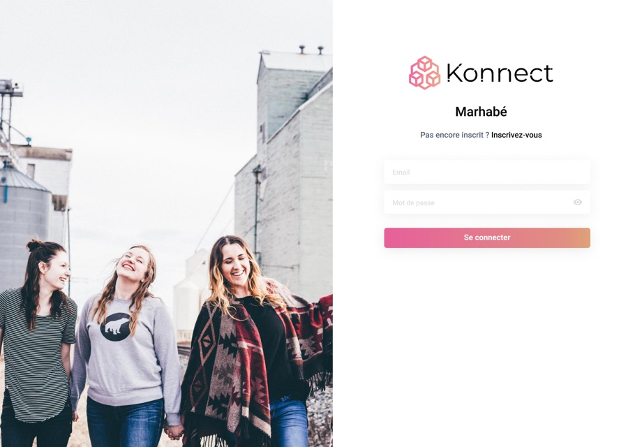
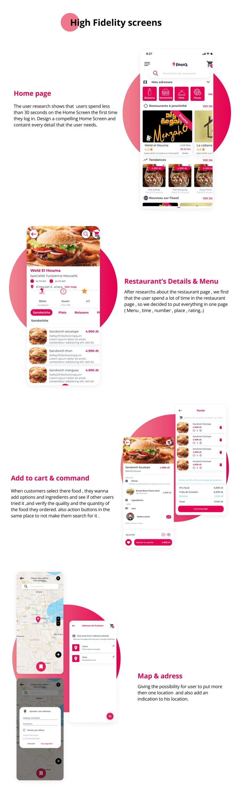

Open to conversationsPortfolio ’26
Hi, I'm Abdou.
Product Designer.
Product designer (UX/UI). Driving growth at InstaDeep, an AI company acquired by BioNTech — after six years across fintech, automotive retail and AI. I build what I design.
- Based in
- Tunis · UTC+1
- Now
- InstaDeep
- Designing since
- 2020
- Focus
- Interaction · Design systems
-
Case studies
Four projects where I can show the thinking, not just the outcome.
Read the case studies -
Interface work
Screens and galleries from eight products across six years.
See the screens -
I build them too
This site is the proof — my Figma, my code, and a test suite that checks its own claims.
How I think
A bit about me

I design products where the interface has to carry trust.
AI, blockchain and fintech all ask someone to act on a system they cannot check for themselves. Six years of my work has been in that gap.
More about meSome recent work
(from full-time jobs)
-
2024–now
InstaDeep
Three product surfaces and the design system they all run on.
Senior product designer at InstaDeep, an AI research company acquired by BioNTech. I work across DeepPCB, their cloud-native PCB routing software, InstaNovo, their protein-sequencing model, and the design system every InstaDeep product surface and demo is built from.

-
2021–23
Steer
End-to-end solutions to reinvent the automotive retail industry
A C2C marketplace for used cars built on verified inspection data and a pricing algorithm, plus a B2B web platform for used-car professionals. I set the product direction, ran the research, and designed the identity, the corporate site and the dashboard.

-
2021
Groupado
A platform where anyone with a skill can teach it
Groupado lets people turn what they know into experiences others can join, online or in person. I joined the startup as they opened their first Tunis office and spent eight months building out the main product — a website and a mobile application — with the homepage designed around search visibility from the start.

-
2020–21
Konnect
One of the first digital wallets in Tunisia
Konnect set out to solve online payment in a country where it barely worked. I joined T-ledger as the only designer among more than fifteen engineers and two product managers, ran the full design process, and rebuilt the application end to end. The team still uses that design today.

-
2020
Fissa3
Food delivery built during the COVID lockdowns
A Tunisian food delivery platform whose stated purpose was not margin but employment — developing the business of restaurateurs and creating work for people who did not have it. I ran the research, personas and empathy mapping, then took it from task flows through sketches and wireframes to high fidelity.

Freelance
An interface redesign between two jobs.
-
2023
Fixerloop
An interface redesign for a services marketplace its own founder found confusing

Let's talk
Senior product designer at InstaDeep. Open to conversations about product work and collaborations.